In China Employee Termination: Pulse Decision-Courtroom Brief for Foreign Employers (2026 Testing Run)
Key takeaways
- In China, termination decisions should be tested as claims you can prove, not just policies you can cite.
- For foreign employers, the practical sequence is: plain-language legal route first, evidence fit second, payroll settlement certainty third.
- If your claim and evidence do not match, a negotiated route is often safer than forcing unilateral termination.
- Payroll closure quality (severance, final pay, IIT handling) is part of legal defensibility, not an admin afterthought.
- The strongest protection is a cross-functional control model with explicit ownership and auditable records.
Pulse lead: today’s risk signal
The legal framework for employee termination in China is not new, but execution risk remains high for overseas employers unfamiliar with local labor practice. Many cases become costly not because the law is unclear, but because companies pursue a route that looks acceptable in policy language while their records and settlement process cannot support it under challenge.
This brief uses a decision-courtroom format: each common employer claim is paired with the evidence burden it must satisfy. The purpose is practical—help foreign decision makers quickly identify whether they have a defensible route or whether they should pivot before exposure grows.
Legal/regulatory context in plain English
China’s Labor Contract Law defines employer termination boundaries, while implementation regulations and judicial interpretations influence how disputes are tested in practice. For non-local teams, the practical message is straightforward: legal basis alone does not carry the case. Reviewers will look for consistent process behavior, contemporaneous records, clear communication, and credible settlement execution.
A useful operating rule: if your internal story changes between HR, manager, and payroll, you do not yet have a stable case. Fixing alignment before action is cheaper than defending contradictions later.
Decision courtroom: claim vs evidence test
Claim 1: “Performance issues justify termination.”
Evidence needed: objective standards, documented communication history, improvement opportunities, and chronology showing fairness.
Common failure: relying on generic manager statements without dated records.
Practical implication: where evidence is uneven, consider negotiated separation and strengthen governance rather than pushing a weak unilateral path.
Claim 2: “We followed policy, so process risk is low.”
Evidence needed: not just policy text, but proof that process steps were actually followed and logged.
Common failure: policy exists centrally, but local execution differs by manager or function.
Practical implication: enforce one execution log with owner accountability and timestamped checkpoints.
Claim 3: “Settlement is straightforward; payroll will handle it.”
Evidence needed: documented severance logic, final-pay composition, leave treatment, IIT assumptions, and payment timing proof.
Common failure: settlement calculations finalized after employee communication, causing corrections and credibility loss.
Practical implication: no employee-facing final step before payroll model lock.
Claim 4: “Global template alignment reduces risk.”
Evidence needed: localized China legal annex, city-sensitive escalation logic, and local legal review triggers.
Common failure: one global template is used without adapting route language and procedural requirements.
Practical implication: global consistency should mean consistent controls, not identical documents.
Why this matters for foreign employers
- It translates local legal complexity into decision checkpoints senior non-China teams can apply quickly.
- It avoids overconfidence from global HR playbooks that do not map cleanly to local dispute logic.
- It puts legal and payroll in one risk frame, reducing “hand-off gaps” that trigger avoidable claims.
Daily operations SOP (role-by-role)
1) Route memo gate (HR + legal)
Create a route memo defining chosen path, legal anchor, and risk level. Hold all employee-facing communication until this gate is formally approved.
2) Evidence integrity gate (Manager + HR)
Compile objective records and verify chronology. HR checks for backfill risk and narrative inconsistency. If integrity is weak, downgrade route aggression.
3) Settlement lock gate (Payroll + finance + HR)
Build and approve settlement model: severance, wages, leave payout, IIT treatment, payment date. Freeze version before execution.
4) Communication control gate (HR + manager + legal)
Align manager script, employee meeting notes, and written documents. Where bilingual support is needed, designate controlling legal language and reviewed translation.
5) Execution gate (HR owner)
Run meeting, document transfer, access-control changes, and payroll trigger through one owner-managed event log.
6) Post-event assurance gate (Legal + HR + payroll)
Within 48 hours, review full file for completeness, payment proof, and exception decisions. Patch gaps immediately.
Required document checklist
- Route memo with legal basis and risk grading
- Evidence index with source and date references
- Consultation/communication records
- Settlement worksheet with formula inputs and versioning
- Approval chain log
- Delivery/receipt evidence
- Final-pay and IIT processing proof
- Archive manifest and closure owner
Exception handling playbook
Employee refuses receipt/signature
Use witness-backed records and legally appropriate alternative service process. Keep communication neutral and scripted.
Payroll finds late discrepancy
Pause execution communications, reconcile assumptions, and issue one corrected settlement narrative with approval trace.
HQ requests immediate action despite evidence gaps
Trigger escalation with documented risk acceptance by authorized approver. If approval is not obtained, delay action.
New adverse fact appears post-approval
Reopen route memo and re-grade risk. Do not execute under outdated assumptions.
System implementation notes
To reduce repeat risk, configure China-specific control fields in HRIS/payroll workflows:
- Route type + legal reference field
- Evidence integrity score
- Protected-status and legal review flag
- Settlement model version ID and approvals
- IIT/final-pay completion marker
- Communication event linkage to document versions
- Exception type + fallback path selection
- Archive lock with controlled reopen rights
These controls convert abstract compliance intent into repeatable, auditable behavior.
Common mistakes and prevention
Mistake: Starting with termination letter drafting
Prevent: decide and validate route first, then draft.
Mistake: Fragmented ownership across teams
Prevent: assign one case owner and mandatory cross-functional gates.
Mistake: Late payroll involvement
Prevent: require settlement lock before communication steps.
Mistake: Template-driven confidence
Prevent: run claim-vs-evidence test for each case before action.
Mistake: Weak archive discipline
Prevent: centralize records with version control and closure checklist.
What to do now (action checklist)
- Add a claim-vs-evidence worksheet to every proposed termination case.
- Define minimum evidence threshold by route type.
- Make payroll settlement lock a non-waivable precondition.
- Build a China-local annex for global offboarding policy.
- Train managers on approved meeting language and refusal scenarios.
- Create a city-sensitive escalation matrix with counsel input.
- Audit recent cases for contradictions between route memo and records.
- Fix control gaps and update SOP ownership tags.
- Track exception events and root causes monthly.
- Re-test playbook quality in each hourly improvement cycle.
What to watch next
- Continued emphasis on evidence quality and procedural fairness in labor disputes.
- Persistent risk from mismatch between global HR policies and local China execution.
- Ongoing importance of payroll/tax close-out as a dispute multiplier.
- Local forum differences that may affect tactical route choice.
FAQ
Is this a legal requirement?
No. It is a decision-quality method to improve compliance outcomes before disputes occur.
Can we use unilateral termination if we have business pressure?
Only where statutory route and evidence quality support it. Business urgency alone is not a legal defense.
Why include payroll so early?
Because settlement inconsistency can weaken otherwise valid legal routes and trigger additional claims.
Should we apply the same process in every China city?
Use a common baseline, but add city-sensitive escalation and local legal calibration.
When should external counsel be mandatory?
High-risk unilateral cases, restructuring, protected-status sensitivity, refusal events, and multi-city complexity.
Legal depth appendix (secondary)
This brief is anchored on three primary references: the Labor Contract Law, State Council implementation regulations, and Supreme People’s Court labor-dispute interpretation guidance. Together they reinforce one employer principle: route selection, process fairness, and evidence credibility must be consistent across the full workflow.
Disclaimer
This article is for informational purposes only and does not constitute legal advice. China labor matters are fact-specific and locally sensitive; seek qualified PRC legal advice before action.
Sources
- National People’s Congress. Labor Contract Law of the PRC (English). http://www.npc.gov.cn/zgrdw/englishnpc/Law/2007-12/13/content_1384064.htm (accessed 2026-03-01).
- State Council. Regulations for the Implementation of the Labor Contract Law (Decree No. 535). https://www.gov.cn/gongbao/content/2008/content_1124615.htm (accessed 2026-03-01).
- Supreme People’s Court. Interpretation on labor dispute application issues (Fa Shi [2020] No. 26). https://www.court.gov.cn/fabu/xiangqing/243981.html (accessed 2026-03-01).
- China Briefing (Dezan Shira & Associates). Employee Termination in China (updated 2025-10-17). https://www.china-briefing.com/news/employee-termination-in-china/.
- Littler. Key Recent Developments in China’s Employment Law (2024-03-20). https://www.littler.com/news-analysis/asap/key-recent-developments-chinas-employment-law-china-us-comparative-perspective.
- PwC Worldwide Tax Summaries. People’s Republic of China: Individual Taxes on Personal Income (2025-01-15). https://taxsummaries.pwc.com/peoples-republic-of-china/individual/taxes-on-personal-income.
Need help from China-Payroll.com?
China-Payroll.com can support foreign employers with compliance-first termination operations, combining local legal coordination, payroll settlement controls, and audit-ready documentation workflows.
Need local employment support in China?
If you need a compliance-first partner for hiring, payroll, and risk controls in China, China-Payroll.com can help evaluate the right setup.
Image Prompt Pack
Create a 16:9 hero image for article title: 'In China Employee Termination: Pulse Decision-Courtroom Brief for Foreign Employers (2026 Testing Run)'. Scene: global operations team evaluating workforce model options for China market entry. Include motifs: decis…